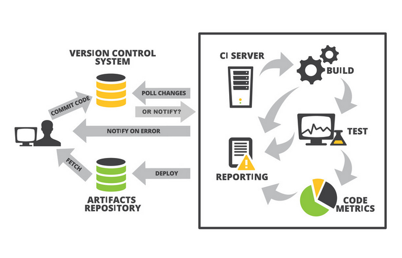
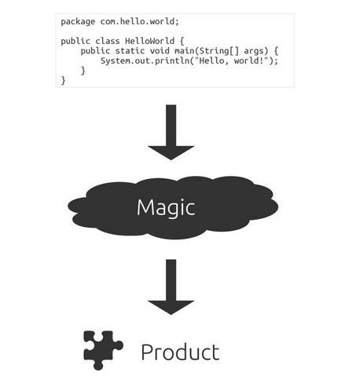
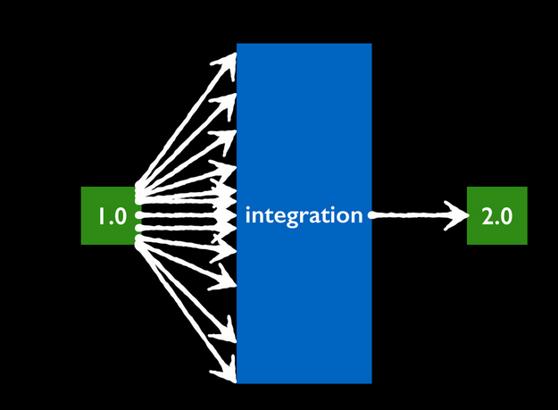

CI
En El Desarrollo De Aplicaciones Multiplataforma
Por: Oscar Cortez / @oscar_mcm
Heads Up
¿Que es CI?
LOL, Integracion Continuala integración continua es una práctica de desarrollo de software que consiste en llevar a cabo integraciones automáticas del proyecto lo más a menudo posible para, de esta forma, poder detectar fallos cuanto antes.
CI Funciona Asi

¿Por Que Usar CI?
- Automatizacion
- Entornos Estandar
- Liberacion Anticipada
- Libreacion a Menudo
Developer Workflow
Normalmente...
Puede X seguir funcionando en 3.0

Si, X puede seguir funcionando

Pero....
oh men come on...
La solucion

La automatizacion es la llave
CI + Aplicaciones Multiplaformas
Nodejs + Node-WebkitComo su nombre indica (más o menos) es node.js corriendo sobre webkit… que dicho así no parece especialmente particular excepto porque resulta que el motor webkit va incluido dentro de tu aplicación.
Custom Events
Additionally custom events can be triggered on a per slide basis by binding to the data-state name.
Reveal.addEventListener( 'customevent', function() {
console.log( '"customevent" has fired' );
} );
Clever Quotes
These guys come in two forms, inline:
The nice thing about standards is that there are so many to choose from
and block:
For years there has been a theory that millions of monkeys typing at random on millions of typewriters would reproduce the entire works of Shakespeare. The Internet has proven this theory to be untrue.
Pretty Code
function linkify( selector ) {
if( supports3DTransforms ) {
var nodes = document.querySelectorAll( selector );
for( var i = 0, len = nodes.length; i < len; i++ ) {
var node = nodes[i];
if( !node.className ) ) {
node.className += ' roll';
}
};
}
}
Courtesy of highlight.js.
Intergalactic Interconnections
You can link between slides internally, like this.
Fragmented Views
Hit the next arrow...
... to step through ...
any type- of view
- fragments
Fragment Styles
There's a few styles of fragments, like:
grow
shrink
roll-in
fade-out
highlight-red
highlight-green
highlight-blue
Spectacular image!

Export to PDF
Presentations can be exported to PDF, below is an example that's been uploaded to SlideShare.
Take a Moment
Press b or period on your keyboard to enter the 'paused' mode. This mode is helpful when you want to take distracting slides off the screen during a presentation.
Stellar Links
It's free
reveal.js and rvl.io are entirely free but if you'd like to support the projects you can donate below. Donations will go towards hosting and domain costs.